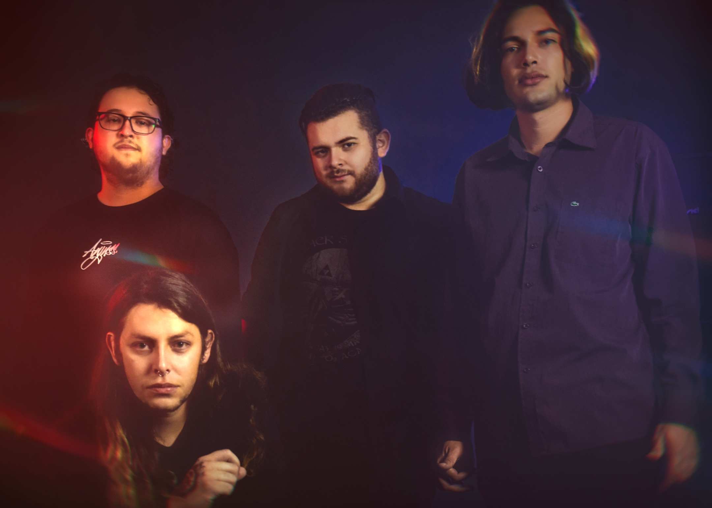
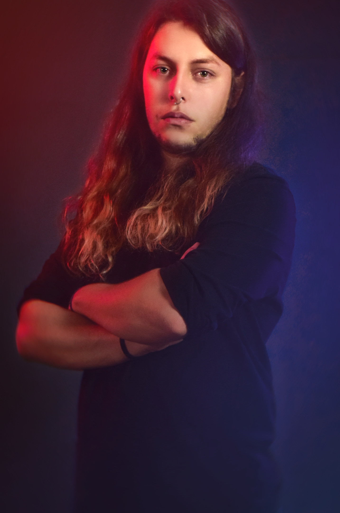
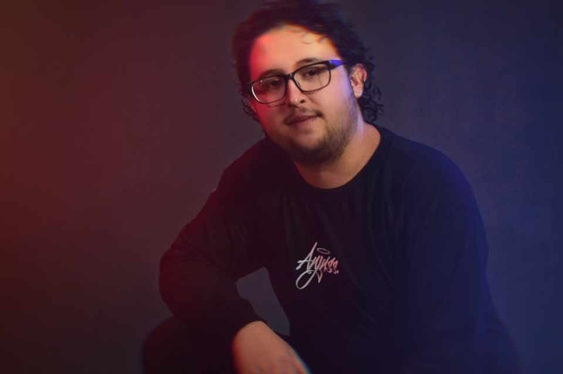
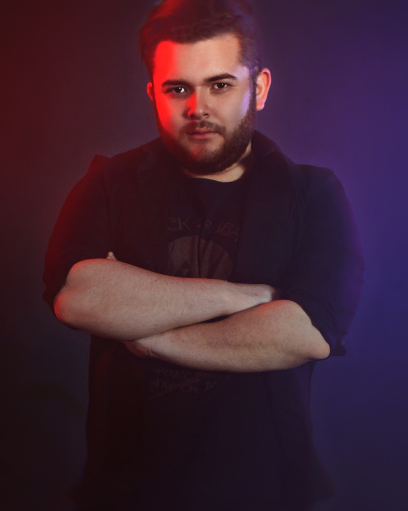
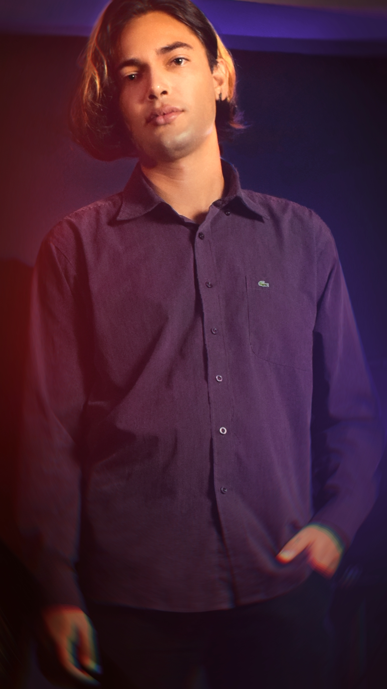

Who's Effect Radio?
Effect Radio is a band with influence in various aspects of Rock, such as Grunge, Heavy Metal, Hard Rock and Progressive Rock, founded in Araucaria / PR, Brazil in 2019. The band made several performances during the year of its foundation, in 2020 with the arrival of the pandemic, used quarantine to prepare the release of their first single, "Monster", which arrived on YouTube with clip produced by Mirante Music and on all Streaming platform. Recorded independently in the studio Bunker Cultural, "Monster" is the band's big bet.

Bruno Schafer
Drummer and founder of the band, has as influence drummers such as xxxxxxx, xxxxxxx, xxxxx and xxxxxxx.
/bruno_schafer

Luan Ribeiro
Commanding the bass of our band, Luan! Influenced by bassists such as Flea, Felipe Andreoli and xxxxxx.
/luan_padilhaw

Thayghethy Souza
On vocals, Thayghethy. With the influence of vocalists such as Andre Matos, Edu Falaschi, Fabio Lione, Dio and Axl Rose, brings several references and inspirations in our songs.
/thayghethy_souza

Eros Ferreira
On guitar, Eros! With great baggage and experience in the underground scene, is the newest member of the band, having as influence guitarists such as Tony Iommi, Randy Rhoades and xxxxxx.
/error_ferr